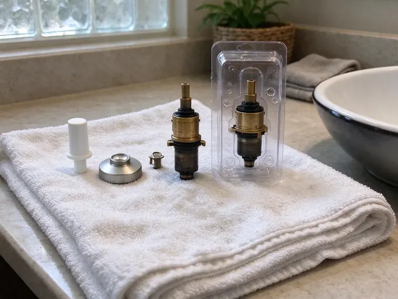

Toilet Installation in St. Cloud, MN
CNV Plumbing sets toilets in St. Cloud, MN on a new seal with stainless bolts, then runs several test flushes before we pack up.
- Old Toilet Removed and Hauled Off
- Local St. Cloud Plumbers
- New Flange When Needed
- All Major Toilet Brands

Need a New Toilet Set in St. Cloud, MN?
Call CNV Plumbing for a flat price on your toilet install, with or without the fixture.
Toilet Installation for New and Remodeled Baths in St. Cloud, MN
CNV Plumbing handles the whole toilet install, from shutting off the old angle stop to the last test flush. We pull the old toilet, scrape the flange clean and check it for cracks or rust. If the flange is broken or sits below the finished floor, we repair or replace it before a new wax ring or foam seal goes on, because no seal can make up for a bad flange. After that, the bowl gets set level.
Work we handle every week:
- Braided supply line and quarter-turn stop replacement
- Rough-in measuring for new floors and additions
- Standard and comfort-height toilet installs

Additional Bathroom Plumbing Services in St. Cloud, MN
From toilets to showers, our bathroom plumbing team in St. Cloud, MN repairs, installs, and replaces every fixture with clean, code-compliant work.


Customers
Why Choose CNV Plumbing for Toilet Installation in St. Cloud, MN?
Our plumbers check the flange before they even unbox your new toilet. If the ring is cracked or rusted, it gets replaced right then. Setting a new toilet on a bad flange is the most common install mistake we see, and it shows up months later as a stained ceiling below or a soft spot in the floor around the base. Fixing it on day one costs far less.
- Correct Rough-In, We measure 10, 12 or 14 inch rough-ins from the finished wall before you buy.
- Durability, Stainless bolts and braided supply lines last far longer than plated steel and vinyl.
- Full Testing, Five or more flushes and a dry paper towel at every joint before we go.
Citywide Coverage
We set toilets throughout St. Cloud in new builds and older homes being remodeled, and our crews work around the tile setter and general contractor so the install lands in the right window. Timing matters on remodels. We would rather come back the next morning than set a toilet on grout that is still soft.
Experienced Team
Each plumber at CNV Plumbing carries a level and a bag of composite shims on every toilet job. That pair heads off most callbacks. An eighth of an inch of rock is enough to break a wax seal in weeks, and a trimmed shim under the low side fixes it.
Safety-First Approach
Plumbing code sets minimum clearances around a toilet, typically 15 inches from the centerline to any side wall and 21 inches of open space in front. Those get measured before you order. In a tight powder room, that rule can push you toward a compact elongated or round bowl rather than the full-size model you picked out at the store.
Trusted Certified St. Cloud Plumbing Services Professionals
At CNV Plumbing, we are proud to offer certified plumbing services throughout St. Cloud, MN. Credentials matter in this trade. Our plumbers hold recognized industry credentials, and they follow strict safety and quality rules on every repair, installation and maintenance call we run.
Call Us Now PHCC Plumbing Contractor Recognition
PHCC Plumbing Contractor Recognition Better Business Bureau (BBB) Accreditation
Better Business Bureau (BBB) Accreditation Angi Certified Pro
Angi Certified Pro ISO 9001 Quality Management Certification
ISO 9001 Quality Management CertificationTypes of Toilet Installation in St. Cloud, MN
Toilet Brands We Install in St. Cloud
We install Kohler, TOTO, American Standard, Gerber and most other brands sold at supply houses and home centers. Every brand has its quirks. Some skirted TOTO models use a Unifit adapter, and certain Kohler tanks take a gasket that hardware stores rarely stock. We keep those parts on hand.

Comfort Height Toilet Installation in St. Cloud, MN
Comfort height bowls stand about two inches taller than standard ones. Consider who uses the bathroom first. Shorter adults and kids sometimes find the taller seat leaves their feet dangling, while anyone with bad knees or a hip replacement usually finds it much easier to sit and stand. Installation is the same as a standard bowl.
Pressure-Assisted Toilet Installation in St. Cloud
Pressure-assisted toilets have a sealed vessel inside the tank that uses line pressure to push the flush. Below about 20 psi, they flush poorly. Before suggesting one, we put a gauge on a hose bib, and we mention the noise, because the flush carries through the whole house. They rarely clog.
Comfort-Height and ADA Toilets in St. Cloud
Aging in place usually starts in the bathroom. A taller toilet and a grab bar go a long way. While the wall is open, we add 2 by 6 blocking between the studs at grab bar height, so the bar can later be screwed into solid wood instead of drywall anchors that pull loose. We also center the bowl to ADA spacing.
Commercial Toilet Installation in St. Cloud, MN
Commercial restrooms take a beating, so we install vitreous china bowls with flushometer valves rather than tank toilets. A flushometer needs a 1 inch supply and steady pressure. We confirm the building line can deliver the valve's rated flow, often 20 to 25 gallons a minute, before any fixture goes up. Fixture counts follow code.
Urgent Toilet Replacement in St. Cloud
A cracked tank or a bowl leaking at the base cannot wait for next week, especially in a house with one bathroom. We keep common two-piece toilets on the truck. In many cases we can pull the broken one and set a replacement in the same visit, with a 12 inch rough-in model in round or elongated. Close the stop until then.
Customer-Supplied Toilet Installation in St. Cloud, MN
Bought the toilet yourself? First, look at the rough-in printed on the carton. We unbox it and look over the porcelain for shipping cracks before we pull your old one, since a hairline crack in the bowl or tank means it needs to go back to the store, not onto your floor. We bring the seal and stainless bolts.

Low-Flow WaterSense Toilet Installation in St. Cloud, MN
WaterSense toilets are capped at 1.28 gallons per flush, and some dual-flush models drop to around 0.8 for liquid waste. It adds up quickly. Replacing a single 3.5 gallon toilet in a household of four can save several thousand gallons a year, and some water utilities have offered rebates on high-efficiency models, so it is worth asking yours. Pick a strong MaP rating.
Local Toilet Installation in St. Cloud, MN
Our plumbers live and work around St. Cloud, so they see the same house styles and drain materials week after week, and they know which ones give trouble. Some older neighborhoods still have lead service lines, so replacing one is a smart move during other plumbing work. That tells us what to expect under the floor before we lift the old toilet. Permits get pulled when required.
Local plumbers show up faster, and the ones who work in St. Cloud every week already know what kind of drains and floors are under most bathrooms. Our techs schedule installs in two-hour arrival windows. You get a text when the tech is on the way, plus a call if the previous job runs over. Most installs are done by lunch.
CNV Plumbing at a Glance
- Fully licensed plumbing team covering St. Cloud, MN
- Same-day appointments and 24/7 emergency response
- Upfront, flat-rate pricing before work begins
- 4.8-star rated by 501+ Minnesota customers
St. Cloud Map
St. Cloud Information
- Population
- 71,013
- Area codes
- 320/763/952
- Service area
- St. Cloud and communities within 40 miles
- Nearby
- Maple Grove, Coon Rapids, Plymouth, Brooklyn Park
Some older neighborhoods still have lead service lines, so replacing one is worth considering during other plumbing work. Flange height, rough-in distance and a level bowl decide whether a toilet in St. Cloud, MN stays dry under the floor.
Expert Services
Reach out to CNV Plumbing for honest, reliable plumbing from people who know the trade in St. Cloud, MN.
Our Specialized Plumbing Services in St. Cloud, MN
At CNV Plumbing, we handle the full list of plumbing services across St. Cloud, MN. From leak detection to full system installs, our team works fast and charges fair prices on homes and commercial properties alike. Take a look at our core services below:


What to Expect From a Toilet Install in St. Cloud, MN
We run every toilet install in your St. Cloud, MN home the same way, from the first measurement to the last flush.
Request a Quote
Call (612) 712-9569 and describe the project. We quote a firm price, with or without the fixture.
Measure and Prep
We confirm rough-in, flange height and the condition of the shutoff. Any flange repair happens before the toilet goes in.
Install and Test
The toilet goes down level on a fresh seal with a new supply line, and the base gets caulked except at the back so a future leak can show itself. Several test flushes finish the job.
Frequently Asked Questions About Toilet Installation in St. Cloud
Most homeowners in St. Cloud, MN pay $200 to $500 to have a toilet installed, fixture not included. A stubborn old toilet adds time. Rusted bolts get cut off, and a cast iron flange that cracks on the way out needs a repair ring, both adding labor.
Lower water bills come first. An old 3.5 gallon toilet uses almost three times the water of a 1.28 gallon model. Newer bowls also have wider glazed trapways that clog less, and the smoother porcelain stays cleaner between scrubbings than an old pitted bowl ever did.
Yes, our labor is guaranteed. A leak caused by the install gets fixed at no charge. The toilet itself carries the manufacturer's warranty, usually one to five years on parts and often much longer on the vitreous china, depending on the brand and model. Keep the box label for the model number.
Start with the rough-in, since that decides which models fit at all. Next comes bowl shape. Elongated bowls are more comfortable but stick out about two inches farther, which can be a problem in a small half bath with the door swinging in. Check the MaP flush score too.
Just about any brand you can buy at a supply house or home center. We see a lot of TOTO and American Standard. Gerber and Mansfield are common in rentals because parts are cheap and easy to get, and we can usually tell you which one fits your budget and your rough-in after a short call. Bring us the model number.
Not usually for a same-spot replacement. Relocating a toilet or adding a new one is different. Those jobs change the drain and vent layout, so most jurisdictions want a plumbing permit and an inspection before the floor is closed back up. We check the local rules for you.
Homeowners set basic toilets all the time. Flange height and bolt torque are where it goes wrong. A low flange needs an extender ring, and one extra turn on a nut can split the base, which is why new floors and wall-hung units should go to a pro.
Plan on one to three hours for a straight swap. Most of that is prep, not setting the bowl. Add a new flange or a subfloor patch and it can run to half a day, which we will flag as soon as we see it.
Hear From Customers Who Hired Our Plumbing Experts

Robert G.
The camera showed a full break in our clay sewer line near the street. CNV Plumbing replaced it with a trenchless pipe burst, so the only digging was two small pits in the yard. They let us watch the footage before and after.
Sewer Line Replacement · St. Cloud, MN
Jessica T.
We were adding a gas range in a kitchen remodel and needed a new line run from the meter. The plumber pulled the permit, ran the pipe through the crawl space, and had it inspected and approved within the week.
Gas Line Repair · Maple Grove, MNLaura S.
Our 40 gallon tank started leaking from the bottom after thirteen years. The tech hauled the old one out, set a new unit with a fresh expansion tank, and had hot water running in about four hours. He took the old tank with him too.
Water Heater Replacement · Coon Rapids, MN
Angela D.
Our sump pump quit during a storm and the water was an inch from the basement carpet. CNV Plumbing put in a new pump with a battery backup that same evening. We have had two heavy rains since. It kicked on both times.
Sump Pump · Plymouth, MNJames P.
Our restaurant had a slow leak at the hand sink that was rotting the cabinet base. CNV Plumbing came in at six in the morning before prep, replaced the trap and both supply lines, and was packed up before my first cook clocked in.
Commercial Plumbing · St. Cloud, MNPatricia H.
We had a slab leak that two other companies could not find. CNV Plumbing located it in under an hour with a listening device. They rerouted the line through the attic instead of breaking up the floor, so we kept our kitchen tile.
Slab Leak Repair · Blaine, MN